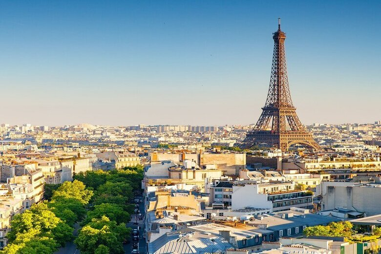
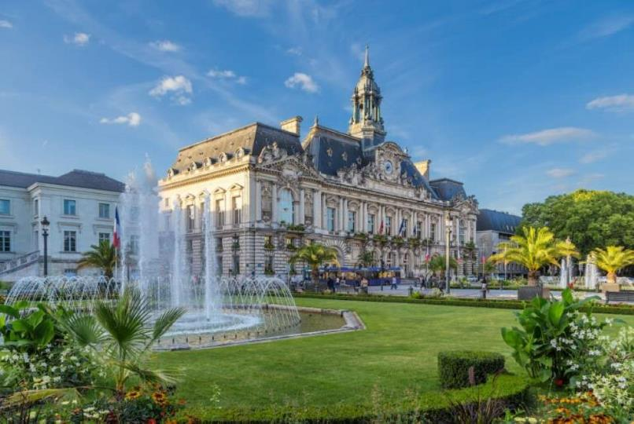
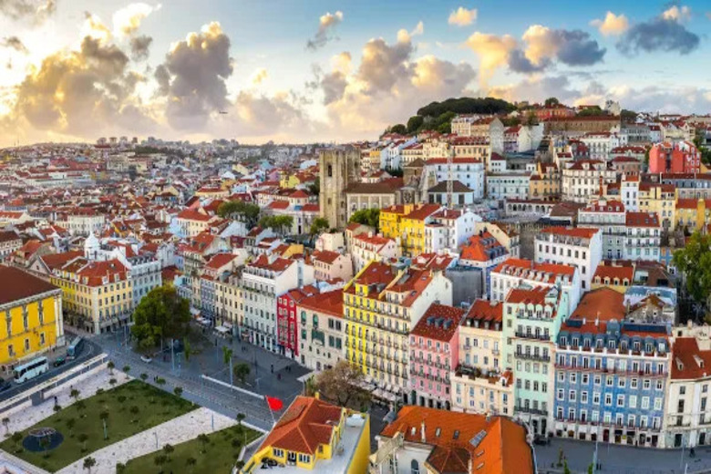
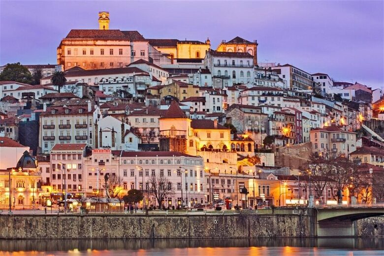
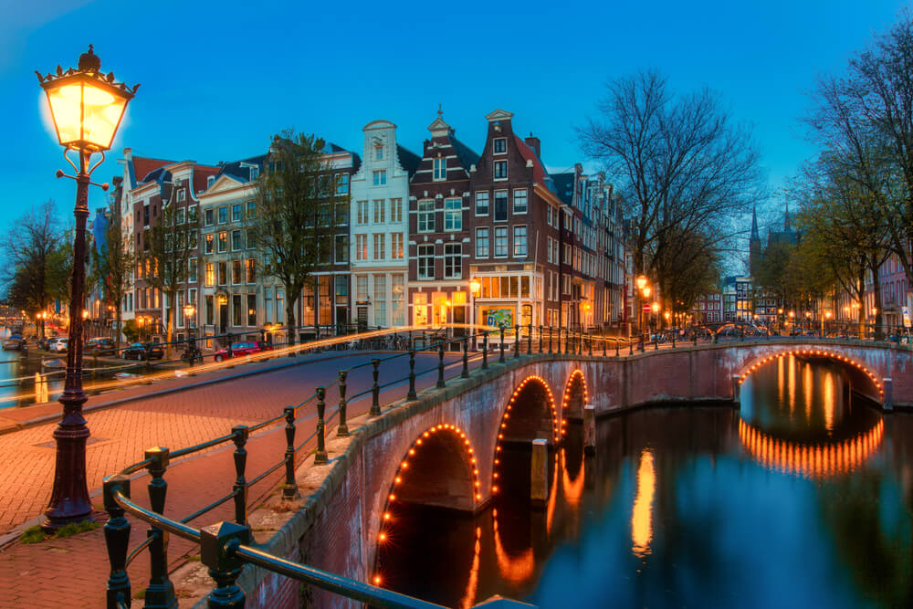
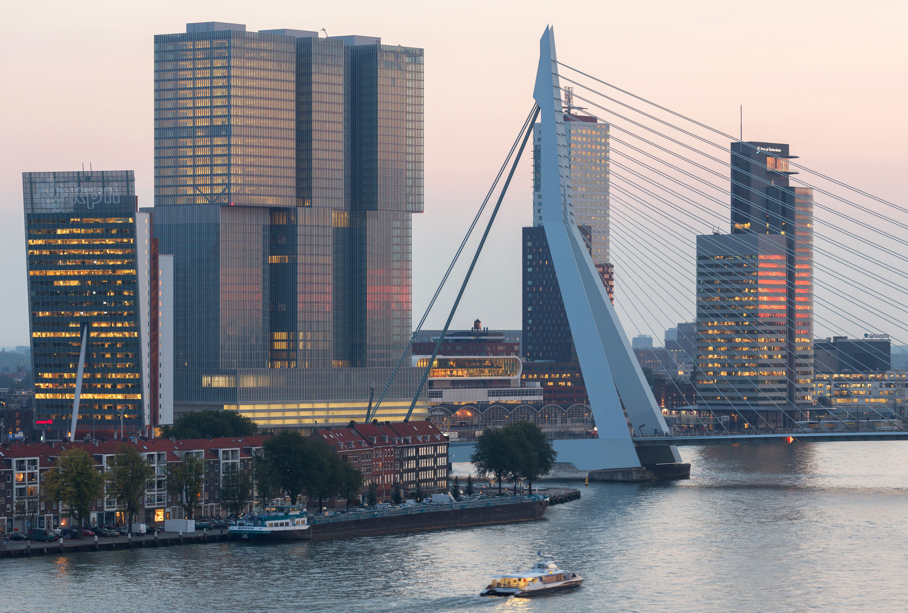
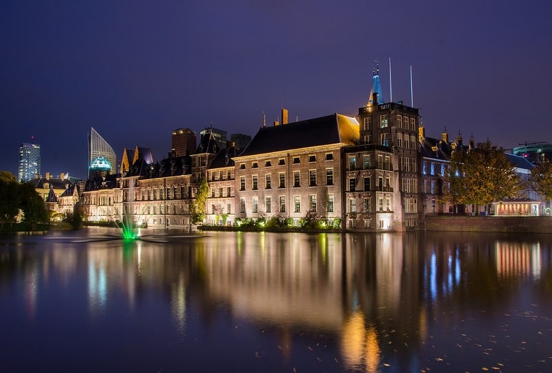
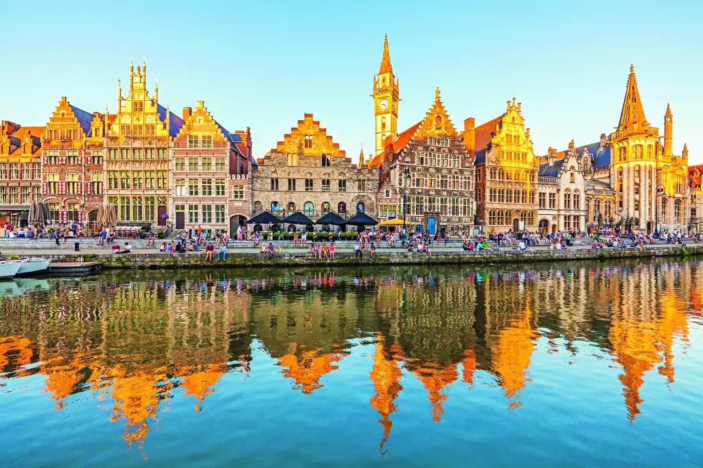

Paris, la Ville Lumière, fascine par son histoire, sa culture et son élégance. De la majestueuse Tour Eiffel au charme bohème de Montmartre, la ville offre une expérience inoubliable. Les bistrots animés, les musées de renommée mondiale.
France 
Paris

Tours

Tours, une charmante ville dans la vallée de la Loire, réputée pour ses châteaux et son riche patrimoine. Promenez-vous dans le vieux Tours avec ses maisons à colombages et ses cafés. Ne manquez pas la cathédrale Saint-Gatien et les délicieux vins locaux.
Amboise

Amboise, une pittoresque ville de la vallée de la Loire, célèbre pour son château royal. Visitez la dernière demeure de Léonard de Vinci et promenez-vous dans ses charmantes rues. Profitez des magnifiques paysages et des vins locaux.
Portugal 
Lisbonne

Lisbonne, une ville enchanteresse avec ses collines pittoresques et ses rues pavées. Explorez les quartiers historiques de l'Alfama et de Belém, et savourez les délicieux pastéis de nata. Admirez les vues spectaculaires depuis les miradouros.
Porto

Porto, une ville pittoresque au bord du Douro, célèbre pour ses vins de Porto. Promenez-vous dans les ruelles du quartier de la Ribeira et admirez ses bâtiments colorés. Ne manquez pas de visiter les caves à vin et de déguster les spécialités locales.
Coimbra

Coimbra, une ville historique du Portugal, célèbre pour sa prestigieuse université. Promenez-vous dans ses rues médiévales et visitez la bibliothèque Joanina. Profitez de la richesse culturelle et des traditions locales.
Pays-bas 
Amsterdam

Amsterdam, une ville animée célèbre pour ses canaux pittoresques et ses musées renommés. Explorez le quartier des musées, visitez la maison d'Anne Frank et flânez dans le quartier Jordaan. Ne manquez pas les charmants cafés et les marchés colorés.
Rotterdam

Rotterdam, une ville dynamique réputée pour son architecture moderne et son port animé. Visitez le musée Boijmans Van Beuningen et admirez le pont Érasme. Promenez-vous dans le quartier de Delfshaven et découvrez ses charmants cafés et boutiques.
Haye

Haye, siège du gouvernement néerlandais, célèbre pour ses institutions internationales. Visitez le musée Mauritshuis et admirez les œuvres de Vermeer et Rembrandt. Promenez-vous sur la plage de Scheveningen et explorez le quartier historique Binnenhof.
Bélgique
Bruxelles

Bruxelles, la capitale de la Belgique, avec sa magnifique Grand-Place et ses délicieuses gaufres. Visitez le Manneken Pis et découvrez l'architecture impressionnante du Parlement européen.
Bruges

Bruges, une ville médiévale enchanteuse, avec ses canaux romantiques et ses bâtiments historiques. Promenez-vous dans le Markt et goûtez les célèbres chocolats belges.
Gand

Gand, une ville flamande dynamique en Belgique, avec son château médiéval et ses charmants quais le long de la rivière Lys. Visitez le célèbre retable de l'Agneau mystique dans la cathédrale Saint-Bavon et dégustez les délicieuses spécialités locales.